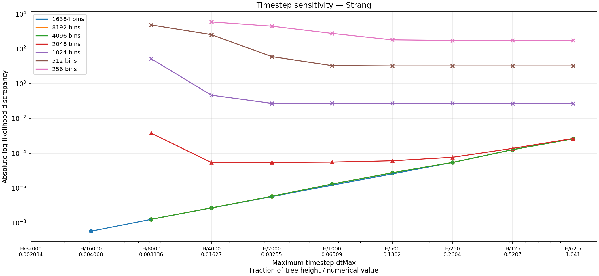
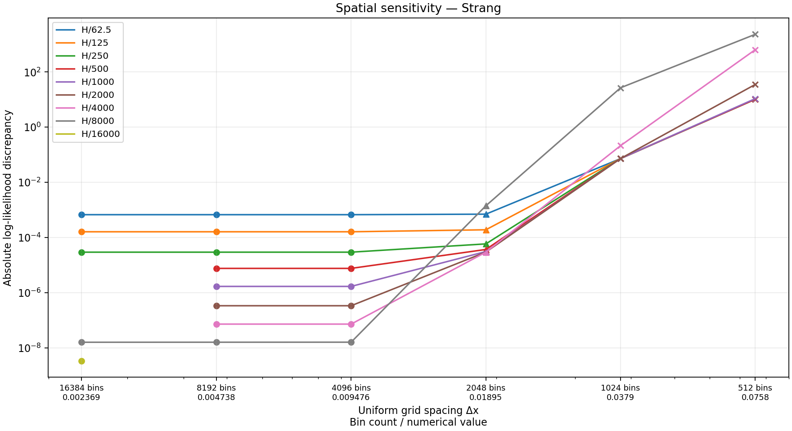
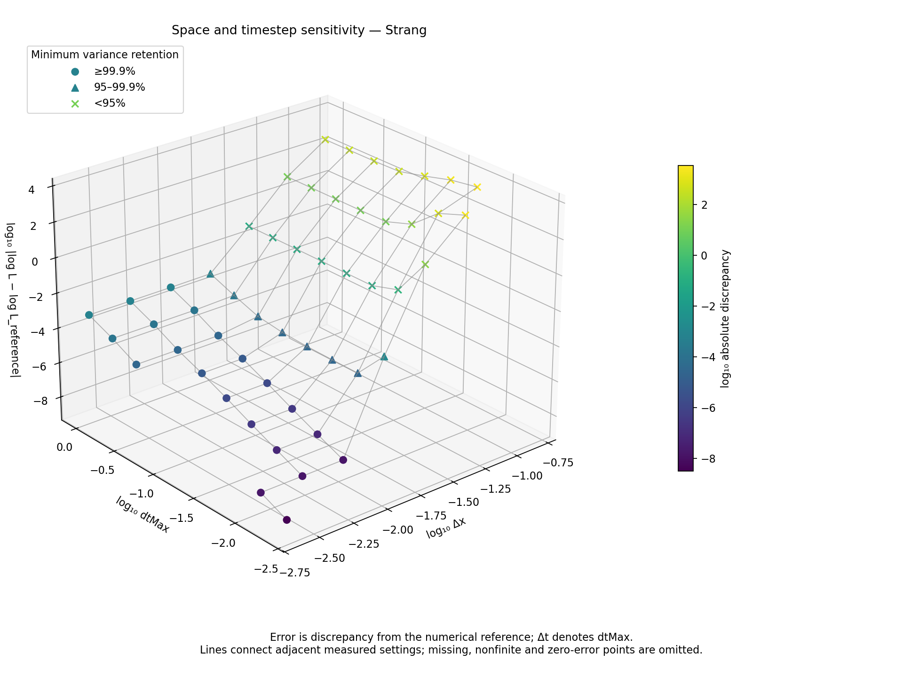
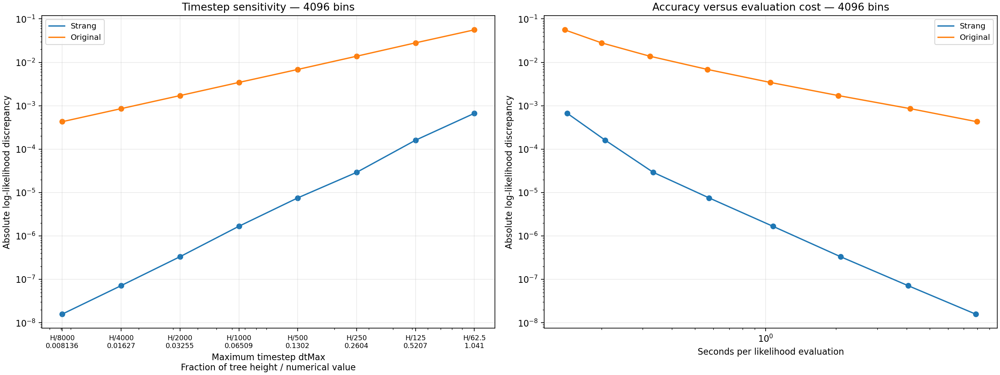

This study asks how much the log likelihood changes when we refine the spatial grid or shorten the integration timestep. It evaluates one fixed 233-species primate example, not an MCMC chain. All measurements use the same padding rule.
Selected absolute log-likelihood discrepancies:
| Uniform bins | H/62.5 | H/250 | H/8000 |
|---|---|---|---|
| 256 | 304.640 | 304.194 | nonfinite |
| 512 | 10.3702 | 10.3697 | 2343.45 |
| 1024 | 0.0725976 | 0.0732384 | 26.9014 |
| 2048 | 0.000699255 | 0.0000583662 | 0.00140772 |
| 4096 | 0.000670133 | 0.0000292449 | 0.0000000158716 |
| 8192 | 0.000670133 | 0.0000292449 | 0.0000000158310 |
| 16384 | 0.000670133 | 0.0000292449 | 0.0000000157951 |
The reference is log L = −829.9955135161624, computed with 16384 bins and H/32000. Its remaining temporal error is estimated at roughly 10⁻⁹ under second-order convergence; this is not a certified bound on total PDE error. The reference checks are detailed below.
“Error” below means absolute difference from our finest numerical reference, not a certified bound on error relative to the exact PDE solution. Axes are logarithmic; lines connect measured points and do not imply that intermediate settings were evaluated.
Every spatial and timestep tick has two lines: the generating setting above, its numerical value below. Thus “H/250 / 0.2604” describes one coordinate, not two different choices. H is the tree height, 65.0916859837, and dtMax = H / divisor. A branch of length L uses Δt = L / ceil(L / dtMax), so actual steps can be smaller than the limit, especially on short branches.
Likewise, “8192 bins / 0.004738” means Δx ≈ 0.004738 on the fixed-width grid. Bin counts include padding, not just the usable trait points. The full Fourier width is n × Δx = 38.8119496472; padding takes space out of that interval. Usable endpoints are recorded in the measurement table.
| Timestep setting | Numerical dtMax |
|---|---|
| H/62.5 | 1.041467 |
| H/125 | 0.52073349 |
| H/250 | 0.26036674 |
| H/500 | 0.13018337 |
| H/1000 | 0.065091686 |
| H/2000 | 0.032545843 |
| H/4000 | 0.016272921 |
| H/8000 | 0.008136461 |
| H/16000 | 0.004068230 |
| H/32000 | 0.002034115 |
| Uniform bins | Numerical Δx |
|---|---|
| 256 | 0.151609178 |
| 512 | 0.075804589 |
| 1024 | 0.037902295 |
| 2048 | 0.018951147 |
| 4096 | 0.009475574 |
| 8192 | 0.004737787 |
| 16384 | 0.002368893 |
Markers describe the worst kernel variance retention encountered during evaluation: ○ at least 99.9%; △ at least 95% but below 99.9%; × below 95%. These thresholds measure resolution of the sampled Gaussian kernel, not likelihood accuracy. The reference has zero discrepancy from itself and is omitted from logarithmic error plots.

At 4096 bins and above, the curves nearly coincide: the principal remaining error is temporal, not spatial, over these measured settings. Strang splitting gives much faster convergence than the original splitting method, although successive error ratios need not be exactly four. The number and size of integration steps depend on individual branch lengths, not just dtMax.
At 1024 bins, much of the curve is a spatial-error plateau. Shortening the timestep initially does little to help. At the smallest timesteps, it makes the result markedly worse: the sampled diffusion kernel becomes too narrow relative to Δx to express its intended variance. The 2048-bin curve has a smaller plateau and also deteriorates at H/8000.
At 256 bins, discrepancies are about 304 at the largest timesteps, rising to 3491 at H/4000. H/8000 produces a nonfinite likelihood and is recorded as a failure, not plotted as an error value. All eight settings have severely unresolved kernels: minimum variance retention is about 4.2 × 10⁻²⁸, falling to 8.6 × 10⁻³⁷ at H/8000. Finite output here does not imply useful accuracy.
A slightly lower absolute discrepancy at a larger timestep need not mean a more accurate time-integration method: errors from spatial and temporal approximations can cancel. Simply decreasing Δt without refining Δx is therefore not a reliable convergence test here.

At fixed dtMax, refining the grid removes the coarse-grid error until the curve reaches a temporal-error plateau. This is why further spatial refinement has almost no visible benefit at the larger timesteps once 4096 bins are reached. Both Δx and Δt matter.
Only measured points are shown. The 16384-bin series is deliberately sparse: H/62.5, H/125, H/250, H/8000, H/16000 and H/32000. The H/16000 spatial curve has just one point; H/32000 contains only the reference and consequently has no positive discrepancy to plot.

Open the interactive 3D figure to rotate, zoom and inspect individual measurements. The HTML includes its plotting library and works offline. Hover details give the bin count, Δx, timestep setting, dtMax, absolute discrepancy and minimum kernel variance retention.
All three coordinates are base-10 logarithms: Δx, dtMax and |log L − log L_reference|. The wireframe joins immediate measured neighbors in the study grid along each direction. Missing settings, the nonfinite result and the zero-error reference leave gaps; no surface is interpolated across them. The error remains a discrepancy from the numerical reference, not a certified exact-solution error. Colors encode log discrepancy. Marker shapes retain the kernel variance categories above; the interactive figure uses a diamond in place of the triangle.

Both methods use 4096 bins and exactly the same spatial geometry in this comparison. “Original” uses the archived, source-checked native implementation from before Strang splitting; it is not a comparison with a different FFT implementation.
The original method’s discrepancy decreases approximately twofold with each halving of Δt, with observed ratios 1.99–2.03, consistent with first-order global temporal error. Strang’s finer-step behavior is consistent with second-order convergence. At a given timestep the costs are similar, but Strang is much more accurate; conversely it can take larger timesteps for a chosen discrepancy. These are measured tendencies for this parameter setting, not universal error guarantees.
Timing starts after Java initialization and FFT preparation, but includes the study’s kernel diagnostics. Each point is a single evaluation rather than a warmed MCMC benchmark. Full subprocess time is also available in the table.
All three reference refinements use the same 16384-bin grid and padding:
| Timestep limit | Log likelihood | Change from preceding row | Evaluation seconds |
|---|---|---|---|
| H/8000 | −829.9955135319575 | — | 37.33 |
| H/16000 | −829.9955135194579 | +1.24996 × 10⁻⁸ | 73.57 |
| H/32000 | −829.9955135161624 | +3.29544 × 10⁻⁹ | 148.06 |
Successive changes shrink by a factor of 3.79, corresponding to observed order 1.92. If second-order convergence continues, the remaining H/32000 temporal error is approximately 3.29544 × 10⁻⁹ / 3 = 1.10 × 10⁻⁹. This inference concerns temporal error only.
At H/8000, refining from 4096 to 16384 bins changes the log likelihood by 7.65 × 10⁻¹¹. This supports spatial stability at that timestep, but does not independently measure the spatial error at H/32000. The usable reference interval is approximately [−10.2266, 25.7521].
Two checks at H/8000 changed log likelihood by much less than 10⁻⁹:
| Check | Comparison with matched main run | Absolute change |
|---|---|---|
| Double Fourier width, 16384 bins | 8192 bins, same Δx, ordinary width | 2.81 × 10⁻¹¹ |
| Increase Gaussian support from 8 to 10 SDs | 8192 bins, same Δx and width | 1.50 × 10⁻¹¹ |
The first preserves Δx while widening the domain; the second changes kernel support and usable endpoints. Together with the refinements above, they support using this result as a numerical reference at approximately the 10⁻⁶ scale. They do not prove total accuracy at the 10⁻⁹ level: we have not repeated spatial/domain checks at H/32000, and all calculations share the same PDE implementation.
The input is the 233-species example: a fixed primate tree and natural-log body-mass observations. Parameter values are λ₀ = 0.15, λ₁ = 0.25, midpoint = 7.75, steepness = 1, μ = 0.1, diffusion variance rate q = 0.03, drift = 0, and observation SD = 0.02. Speciation varies sigmoidally with the trait. Extinction, drift and diffusion coefficients are constant in both trait space and integration time. The root prior is Observed, with survival conditioning. Priors on model parameters do not contribute to the reported log likelihood.
Every evaluation uses a uniform grid, with no fine-to-coarse switch. The midpoint and full Fourier width are fixed across the main measurements. Padding is always sized for H/62.5 and eight Gaussian standard deviations, even when the integration timestep is much smaller. Thus geometry does not change with dtMax within a given bin count.
There are 62 main evaluations:
Two additional boundary checks use doubled Fourier width or ten-standard-deviation support. They are recorded in the same table but excluded from the main curves. The original 56 evaluations completed successfully in 435.30 seconds including startup. Eight additional 256-bin evaluations took 4.67 seconds including startup (0.65 seconds of likelihood computation); seven returned finite likelihoods and one returned a nonfinite likelihood. All 64 traversed 464 branch-segment kernel requests. Earlier measurements and the reference are unchanged.
At 256–2048 bins, diagnostic mode permits positive variance loss so that we can measure its consequences instead of discarding those likelihoods. Zero variance, invalid normalization and nonfinite kernels remain errors. Finer grids use the 99.9% guard. A completed diagnostic run does not imply an adequately resolved kernel. Counts refer to branch-segment kernel requests, including cache hits, rather than every integration step.
The results do not test nonzero drift, other parameter values, MCMC proposals, or the fine-to-coarse transition. In particular, an accuracy choice here is not a safe default for an entire posterior distribution.
measurements.tsv is the only data
table. Its first line is a JSON comment with the initial input/code
hashes and run revision; the remaining lines are tab-separated
measurements. The runner was subsequently extended to add 256 bins;
input, Java driver and numerical binaries still match these hashes.
Columns record settings, method, guard mode, log likelihood, computation
time, actual timestep range, kernel variance diagnostics and usable grid
geometry. Rows marked kind=boundary are the separate
boundary checks. Figure discrepancies are computed directly from these
likelihoods.
From the SSE repository root:
python3 validation/likelihood_reference2/run.py --plot-only
# Also generate the offline interactive figure (requires the Python plotly package):
python3 validation/likelihood_reference2/run.py --plot-only --interactive
# To compute missing settings, with BEAST2_HOME set and compiled Java/native code available:
python3 validation/likelihood_reference2/run.pyStatic plotting requires Python and Matplotlib only; interactive HTML
additionally requires Plotly. Measurement additionally requires Java,
BEAST2, the release native library at
build/gcc-16/libsse_quasse.so, and the verified archived
library at build/strang/baseline/libsse_quasse.so. The
latter is a local archive, not rebuilt by this runner. The runner
compiles the experimental Java driver and keeps classes, input copies
and execution logs under build/likelihood-reference2/. It
runs serially with a 900-second budget, appends each completed result
immediately, and skips settings already in the table on resume. Runner
changes to extend the matrix or adjust plots are allowed; changed input,
Java driver or numerical binaries require preserving the old table
before starting a fresh run.
The previous likelihood_reference/ archive is untouched
and is not needed to generate these figures.